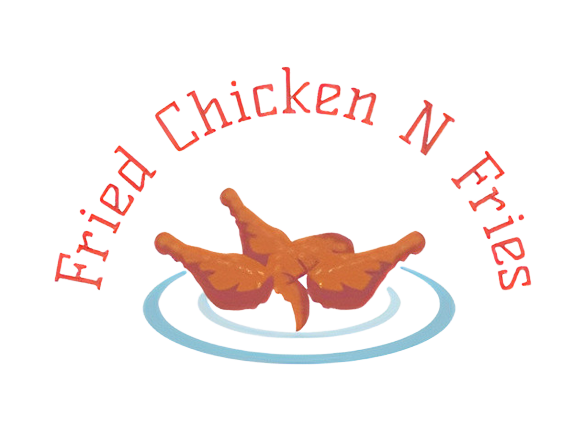

The Special of The Week!
Wear any Taylor Swift, get 50% off!
Most Ordered Item of the Week!
Twisted Hot Chicken with Fries
Our Reviews
"I can't get enough of their fried chicken and fries. It's the ultimate comfort food fix. The flavors are amazing, and the service is top-notch. I'm a fan for life!"
-Sarah
"This place knows how to do fried chicken right! The chicken is juicy, and the coating is perfectly crispy. The fries are the cherry on top. You won't be disappointed!"
-King
"Their fried chicken sandwich is pure perfection! Crispy, juicy chicken, fresh veggies, and a divine sauce all in one bite. I'm hooked!"
-Adam

Our Backstory
FnF Fried Chicken and Fries is the culinary lovechild of two childhood friends, Vedant and Juvi. Growing up, they shared a deep bond over their shared passion for good food, especially the simple pleasure of crispy fried chicken and golden fries.
Years later, after pursuing separate careers, the duo reunited with a shared dream: to bring their favorite food to the world. Thus, FnF was born, fueled by their cherished memories of picnics, family gatherings, and late-night snacking sessions.
After months of rigorous experimentation and taste testing, they cracked the code. FnF's secret blend of spices and a unique cooking process resulted in fried chicken with a crispy, flavorful crust and incredibly tender meat. Their hand-cut fries, seasoned to perfection, became the ideal companion to their golden chicken.
Today, FnF continues to flourish, serving up nostalgia and incredible flavors to a growing community of food enthusiasts. Our commitment to quality, exceptional service, and the magic of our founders' shared dream is what sets FnF apart.
Join us at FnF and be a part of our delicious story. Discover why our fried chicken and fries are the heart and soul of our business, and let your taste buds savor the nostalgia with every bite.
Welcome to FnF – Where Our Story Meets Your Palate!